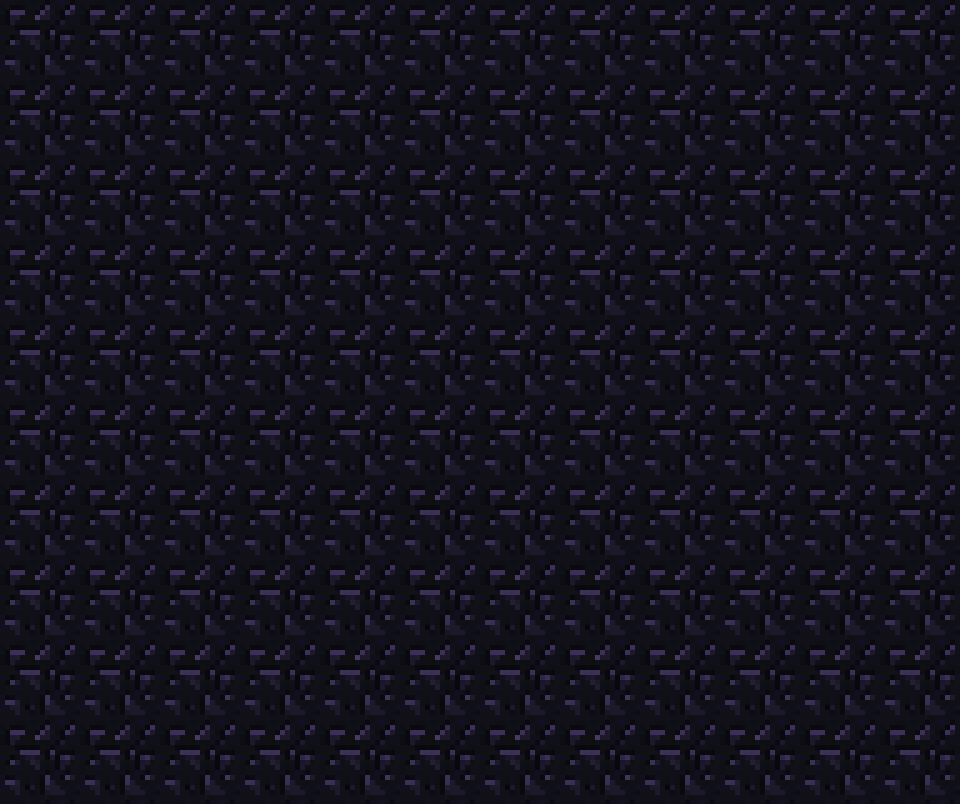

Cómo matar al Wither
MODO DIFÍCIL

El modo difícil consiste en matarlo en un campo abierto, ya que es una criatura con mucha vida, y su efecto de veneno deja a los jugadores indefensos.
Asegurate de que tienes el equipamiento necesario para luchar contra él.
¿Cómo invocar al Wither?
Al invocar al Wither, escucharas este sonido característico de Minecraft:
Ya estas listo para la pelea, recuerda guardar distancia y curarte ¡SUERTE!